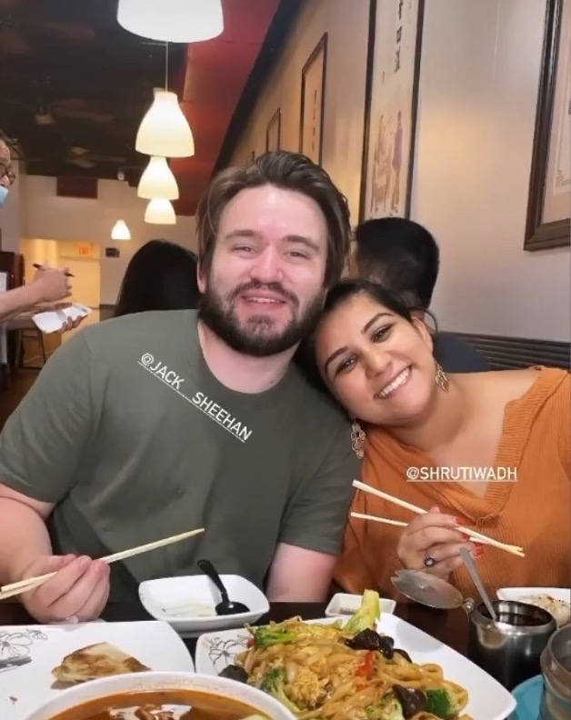
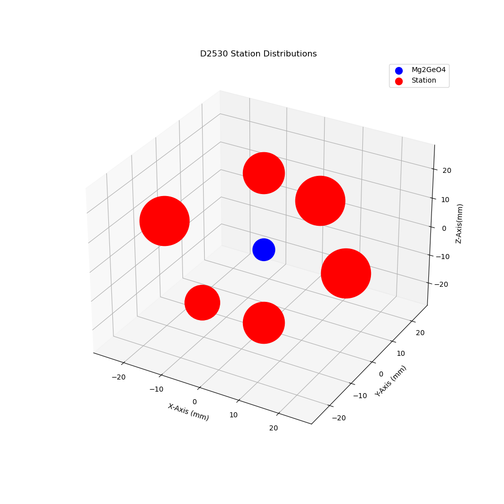

Welcome to the website of
Jack Sheehan
A PhD student at Harvard University studying planetary geophysics.


Welcome to the website of
A PhD student at Harvard University studying planetary geophysics.
 I'm a PhD candidate in the Department of Earth and Planetary Sciences at Harvard University, working with Dr. Rebecca Fischer. I am interested in the physics and consequences of impacts during the planetesimal and protoplanet stages.
I'm a PhD candidate in the Department of Earth and Planetary Sciences at Harvard University, working with Dr. Rebecca Fischer. I am interested in the physics and consequences of impacts during the planetesimal and protoplanet stages.
Before coming to Harvard, I graduated with a BS in Geophysics and a BA in German Studies from Rice University. My undergraduate thesis investigated nano-scale earthquake analogs using machine learning, and was advised by Dr. Zhigang Peng at Georgia Tech through the IRIS Internship Program.
I'll use this website to showcase my research with as little technical jargon as possible. I believe academic language is a significant barrier to accessible science, which is an issue I hope to combat throughout my career. This site embodies my desire to make research more appealing to those not actively studying it. If you have any questions or comments about my work or anything else, please reach out! Thank you for reading. :)
 11 months after starting my research at Georgia Tech, I successfully defended my senior honors thesis! I've put more work into these 35 pages than anything so far in my academic career, so this moment feels a little surreal. For my work on my thesis, I received a Distinction in Research Award and the Sam Worden Endowed Memorial Award in Geophysics.
11 months after starting my research at Georgia Tech, I successfully defended my senior honors thesis! I've put more work into these 35 pages than anything so far in my academic career, so this moment feels a little surreal. For my work on my thesis, I received a Distinction in Research Award and the Sam Worden Endowed Memorial Award in Geophysics.
My thesis can be accessed here: https://doi.org/10.25611/MF2H-9609
EqTransformer versus Jack: The Knockout!
After last week's prolonged tussle for power with EqTransformer, I approached this week with a little trepidation. Dr. Peng was back from vacation, I had a little over a week until my first research presentation (more on that later), and I was entering the last phase of my internship. The stage was set for...[Read More]
Weekly Updates
Dr. Peng was on vacation this week and I'm not going to lie, it did sort of feel like when the parent leaves the kids home alone. (Should Mandy and I have thrown a party??) Before I get into the weekly updates...[Read More]

Exploring Atlanta
This past weekend was really the first time I explored Atlanta! I've been planning to do it for ages, but with the internship and the Seismology Skill Building Workshop, I've been so busy the time has really flown by. This Wednesday was actually my halfway point in the program. That's simultaneously exciting and nerve-racking. Michael keeps saying that our progress is logarithmic, so we're just now going to start seeing the real results. This week helped solidify that in my mind. Outside of work...[Read More]
Weekly Updates
This week was all about three tasks. First and most importantly, get EqTransformer to work! Second, present my research so far to the rest of the IRIS cohort. Third, start using Jupyter notebook. Through all these tasks, I have felt the most successful I have so far in the program. This feels really great, because I am finally starting to see all of my learning coming together. I mean, I didn't even know what bash was when this internship started, and now I can comfortably navigate around a computer without a mouse at all! Plus, I'm beginning to ask better questions. I ask questions constantly—at least 5 times a day—to various people in the lab. (Shoutout to Qiushi, Lindsay, and Mandy for being the best and always stopping to answer them!) Looking back at the type of questions I'm asking, I recognize that I've progressed from confusion to curiosity. I can't stress enough how happy this makes me!! I finally am starting to feel like I belong in this internship program...[Read More]

Weekly Updates
After learning all about EQcorrscan last week from Clara, this week I got a tutorial on EqTransformer from Lindsay. I'd heard a lot about Lindsay from everyone in the lab, so it was super awesome to finally meet her! She is so kind and patient, evidenced by the fact that she spent three hours troubleshooting a tutorial with me and Mandy that was supposed to...[Read More]
Weekly Updates
This week has done so much for my self-confidence in the lab! I saw the dataset that I will be working on for the rest of the summer for the first time, and I am finally comfortable navigating the remote softwares and servers in Dr. Peng's lab. It has been a slow start for sure, but a very comprehensive one. This week, I got a tutorial on template-matching techniques from two of Dr. Peng's grad students, Qiushi and Clara. Interestingly, Clara was also an IRIS intern in Dr. Peng's lab as an undergrad. It's very motivating to see real examples of interns benefiting from their experiences or getting offers. Also this week, I spent a day learning how to use Jupyter Notebooks. They're something we've had in classes before, but I've always sort of done just enough to avoid...[Read More]
 Weekly Updates
Weekly Updates
This week was a little bit (lot) more intense than the first. Outside of the internship, I got to go to my first NBA playoffs game (go Hawks!). As far as work goes, I have really been enjoying the IRIS Seismology Skill Building Workshop...[Read More]
My First Week
This week I started my internship in Dr. Peng's computational geophysics lab at Georgia Tech. On Sunday I made the 9-hour drive from STL to ATL, and moved into the apartment above the garage of my dad's house. I was a little nervous about this living arrangement at first, but it's actually been very nice. I am able to operate on my own schedule, but can still see my little brother and my dogs when I need to destress. The only thing I've had trouble with so far is waking up in the morning, but that's nothing new! Overall, the transition to Atlanta and working life has been easier than I thought it would be...[Read More]